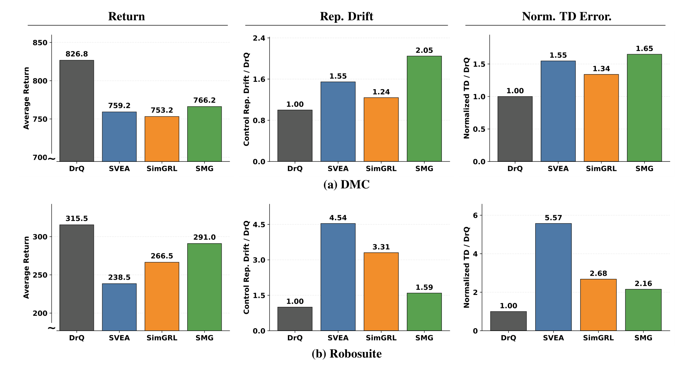

Control objective+Robustness objective
↓
One changing visual encoder
Two learning signals jointly modify the representation during actor–critic training.
Separate Then Align Representations
Decoupled Representation Learning for Visual RL Generalization
STAR learns a control-relevant representation first, then aligns a robust visual pathway to the frozen control interface offline—without additional environment interaction or controller retraining.
Learn the control encoder and policy from source observations using weak augmentation.
Train only the robust encoder and aligner to match that fixed reference.
Conventional approaches often optimize control and robustness through the same evolving visual representation. STAR changes the order: learn a reliable control interface first; robustify the observation pathway afterward. The downstream controller remains untouched.
Robustness objectives and the critic can push on the same representation while online training is still changing its meaning.
Two learning signals jointly modify the representation during actor–critic training.
A fixed reference turns online interference into offline representation recovery.

STAR is the full framework. Post-Representation Alignment (PRA) is the offline second stage that recovers the control reference from perturbed observations.
Train a DrQ-style actor–critic on weakly augmented source observations. An auxiliary forward-dynamics objective helps form a control-relevant latent reference.
Initialize a robust encoder from the control encoder. Use the retained replay buffer with paired weak/strong views, and train the robust pathway against a frozen target.
Replace the source encoder with the aligned robust encoder and adapter. Pass its features to the original actor or action-generation module unchanged.
These budgets refer to the visual RL experiments. The Diffusion Policy adaptation uses a separate 20-epoch offline alignment schedule.
The paper evaluates a frozen control policy under changes in appearance, video backgrounds, and a separately adapted geometric-perturbation family.
Walker Walk, Cheetah Run, Finger Spin and Cartpole SwingUp. Color and video backgrounds probe appearance robustness.
Door and TwoArmPegInHole evaluate visual generalization with interaction-sensitive objects and geometry.
PickPlaceCan and NutAssemblySquare test whether the same offline alignment principle works for a fixed diffusion action module.
Aggregate returns are averaged over the benchmark's reported evaluation conditions. Diffusion Policy uses success rate (%), not episodic return.
Best competing baseline (SimGRL) → STAR
Best competing baseline (SECANT) → STAR
Pretrained Diffusion Policy → DP + PRA
Choose a table to inspect the reported numbers.
| Setting | DrQ | SVEA | SGQN | SMG | SimGRL | SECANT | STAR |
|---|---|---|---|---|---|---|---|
| Original avg. | 826.8 | 759.3 | 756.0 | 766.3 | 753.3 | 795.0 | 857.5 |
| Shifted avg. | 459.9 | 582.1 | 657.8 | 706.4 | 709.1 | 587.3 | 795.7 |
Appearance-based shifts: Color Easy/Hard and Video Easy/Hard. Mean over four seeds; shifted average excludes Original and covers 16 task–shift pairs.
| Setting | DrQ | SVEA | SGQN | SMG | SimGRL | SECANT | STAR |
|---|---|---|---|---|---|---|---|
| Original avg. | 315.5 | 238.5 | 280.5 | 291.0 | 266.5 | 334.0 | 464.0 |
| Shifted avg. | 98.3 | 158.9 | 194.4 | 195.5 | 175.0 | 257.0 | 380.5 |
Door and TwoArmPegInHole; shifted average covers the paper's Easy, Medium, Hard and Video conditions (8 task–shift pairs), excluding Original.
| Task | Method | Original | Easy | Medium | Hard |
|---|---|---|---|---|---|
| Can | DP | 100.0 ± 0.0 | 39.3 ± 4.1 | 22.0 ± 4.3 | 14.0 ± 3.3 |
| DP + PRA | 99.3 ± 0.9 | 72.0 ± 3.3 | 62.0 ± 4.3 | 41.3 ± 7.4 | |
| Square | DP | 96.0 ± 1.6 | 43.3 ± 3.4 | 28.0 ± 1.6 | 15.3 ± 2.5 |
| DP + PRA | 98.0 ± 0.0 | 76.0 ± 2.8 | 74.7 ± 5.2 | 67.3 ± 0.9 |
DP + PRA adapts the visual representation pathway while keeping the pretrained diffusion action-generation module frozen.
| Benchmark | Evaluation | −Dyn, −S2 | +Dyn, −S2 | −Dyn, +S2 | +Dyn, +S2 |
|---|---|---|---|---|---|
| DMC-GB | Original | 852.5 | 858.0 | 850.3 | 857.5 |
| Shifted | 399.9 | 399.3 | 773.4 | 795.7 | |
| Robosuite | Original | 319.5 | 464.5 | 315.5 | 464.0 |
| Shifted | 96.0 | 103.8 | 262.0 | 380.5 |
Stage-2 alignment provides the major shifted-domain gain. Dynamics supervision improves reference quality, especially on Robosuite.
| Setting | DrQ | SVEA (O) | SVEA† (G) | STAR (G) |
|---|---|---|---|---|
| Rotation Easy | 157.5 | 159.5 | 313.0 | 825.5 |
| Rotation Hard | 100.0 | 102.4 | 180.5 | 825.8 |
| Shift Easy | 119.3 | 129.9 | 462.3 | 789.5 |
| Shift Hard | 75.8 | 89.7 | 153.5 | 675.0 |
| Shifted avg. | 113 | 120 | 277 | 779 |
Per-shift rows: arithmetic means calculated from the four task means in NeurIPS Table 15 (rounded to 1 decimal). Final row: rounded benchmark averages as reported in the paper. † SVEA(G) is an external reference using different settings and five seeds; STAR(G) and in-paper evaluations use four seeds, so this is not a matched comparison. O: overlay augmentation; G: geometry-matched augmentation.
Explore task-level rollouts across appearance and geometric shifts. Select a benchmark, task and shift family. Each clip is labeled by benchmark, task and evaluation condition.
A two-stage design gives control representation learning and visual robustness adaptation separate, complementary roles.
A good reference latent supports the downstream policy; auxiliary dynamics supervision can strengthen that reference, particularly for manipulation.
Matched ablations show large gains from adding PRA even without the Stage-1 dynamics objective.
PRA can adapt visual RL or a pretrained diffusion policy by changing the visual pathway rather than retraining action selection.
Effectiveness depends on the quality of the fixed control reference. Geometric robustness requires an augmentation selected for the target transformation family, and the work does not establish robustness to arbitrary dynamics or task-semantic changes. The paper does not evaluate vision-language-action models.
Cite the NeurIPS 2026 poster. Verify final proceedings metadata against the camera-ready record before external publication.
@inproceedings{heo2026star,
title = {Control First, Robustness Next: Decoupled Representation Learning for Visual RL Generalization},
author = {Heo, Chanyong and Jeong, Hyelyn and Park, Jongchan and Oh, Seungjun and Kim, Yusung},
booktitle = {Advances in Neural Information Processing Systems},
year = {2026},
note = {Poster}
}